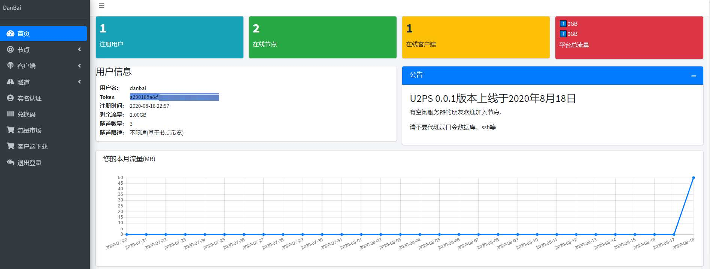

U2PS开发日志
- 作者:
- 淡白
- 创建时间：
- 2020-08-10 13:09:43
- java u2ps
摘要：U2PS是一款内网穿透平台，用户可以将自己的服务器加入平台，其他用户可以选择节点进行内网传输，并将流量计入节点所属用户的账号。该平台支持TCP、UDP、HTTP和SOCKS5代理，并提供简单的Web操作界面配置。平台还具有热更新功能，无需重启客户端即可更新隧道。近期的开发进展包括完成对节点、客户端和隧道的增删改查功能，对接支付和实名认证系统，将服务端进行分离，通过dubbo调用服务端，完善流量统计功能，并进行容器化部署。接下来的开发重点是实现服务端和前端的对接和通信。
U2PS
  U2PS内网穿透平台,用户可以将自己的空闲服务器以Node身份加入平台,其他用户则可以选择Node进行内网传统,其他用户在Node上产生的流量将计入Node所属用户的账号。
TCP、UDP、HTTP、SOCKS5代理
Web操作界面配置简单
热更新无需重启客户端即可更新隧道
节点多、各国IP,基于Node数。
2020年8月18日
今日U2PS已经上线了. 
2020年8月14日-8月17日
完成了web端对节点、客户端、隧道的增删改查.
对接了支付和实名认证.
2020年8月10日-8月14日
- 将服务端进行分离，把web和服务端分别独立出来。以防修改web端要重启服务端，会影响到node和客户端。
- web端通过dubbo调用服务端。
- 流量统计功能完善。
- 运行环境试用容器部署（已经完成环境搭建可以直接打包到docker仓库，然后k8s调整版本发布了）。
2020年8月1日-8月10日
- 服务端Api框架,与客户端、Node端通信。
- 客户端和Node端基础功能(TCP、UDP、HTTP、SOCKS5)代理,已经大致完成开发现在开始主要开发服务端和前端的对接。